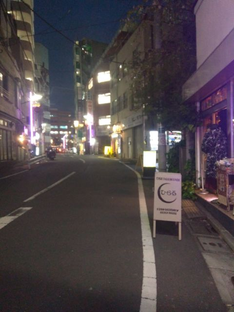

高円寺 × 東京高円寺阿波おどり

高円寺、2026年。
2026
1957
この街には、
69年ぶんの時間がある。
下へ、1957年へ
「ばか踊り」として始まる
阿波おどりは、最初から「阿波おどり」ではなかった。
1957年8月27日。高円寺南口商盛会（いまの高円寺パル商店街）の青年部の若手が、街の賑わいを求めて「高円寺ばか踊り」を始めた。隣の阿佐ヶ谷では1954年から七夕まつりが始まっていて、それに負けてなるものかと奮起した青年部の記念行事だった。
[1]
編集部の余白
観光のためではなく、商店街の青年部の記念行事から始まった。1959年、続けるかどうかの無記名投票は10対9。1票差で、いまがある。
1 杉並区「東京高円寺阿波おどり」
一 ／ 五